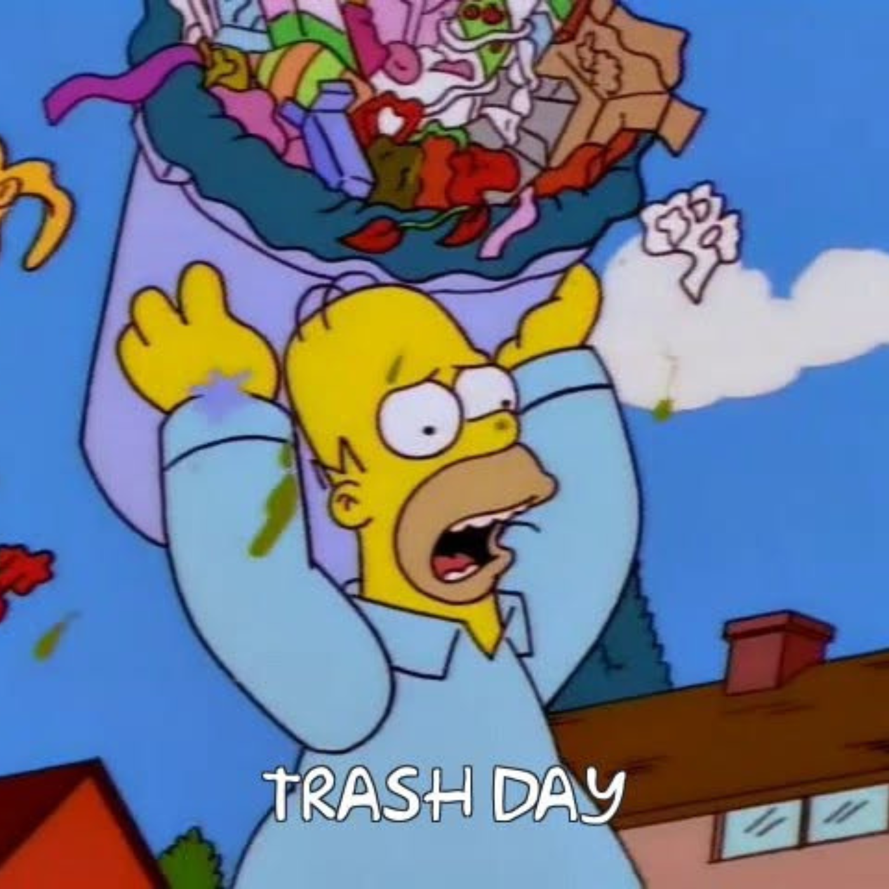

“Trash Day” é a segunda paródia do álbum Poodle Hat, lançado por “Weird Al” Yankovic em 2003. A música é uma paródia de “Hot in Herre”, sucesso do rapper Nelly, e transforma o tema da canção original em uma situação cotidiana bastante desagradável: a sujeira acumulada dentro de casa.
Na letra, o narrador descreve o estado caótico e imundo de sua residência enquanto reclama do dia da coleta de lixo. Em vez de tratar a ocasião como uma tarefa doméstica simples, ele apresenta o momento de colocar os sacos de lixo para fora como um verdadeiro incômodo, destacando a sujeira e a bagunça que dominam sua vida. Com seu humor exagerado e escatológico, “Trash Day” transforma uma atividade comum em uma paródia sobre desorganização, falta de higiene e os pequenos transtornos do cotidiano.
It's rotten (rotten, rotten, rotten)
So rotten here (here, here, here)
So rotten (rotten, rotten, rotten) (uh)
Oh
It was like, the last day before trash day (uh)
My place was gettin' kinda nas-tay (uh)
Even though the garbage I knew would reek
(You know) Thought that I could leave it for one more week
Then, um, I'm takin'
Birthday cake 'n'
(Oh) Chili and greasy old bacon
Throw it all on top of the mess I been makin'
Wife's so mad, she starts to shakin'
Leaky bag, 'n' now that girl is gaggin'
She's naggin'
"I need you to get that stuff off the kitchen floor" (uh)
"Is that too much to ask you for?" (oh)
But I see no reason why
Can't let a few more weeks go by (uh uh)
And now garbage is piled up high
And buddy, you should see the flies
I said ...
There's somethin' rotten here (say what?)
You better hold your nose, oh
(Hey, you disgusting slob, you gotta take the trash out) (uh uh uh uh)
Oh, boy there's a lot in here (a lot)
And every day it grows
(Hey, you disgusting slob, you gotta take the trash out) (uh uh uh uh)
Make ya wanna throw up
Look at all this garbage I keep generatin'
(Come on) I sit around all day and watch it biodegradin'
Bet there's a hundred health codes that I'm violatin'
Even my dog passed out and needed resuscitatin'
You won't believe it, take a whiff of that aroma
Sure to put you in a coma
It's so messy, can't find my toenail clippers
It so bad the roaches wearin' slippers
Warm, (uh) sweaty (uh) clothes piled up in this joint
Stand up by themselves at this point
It's so filthy, now baby, I can't lie
I wipe my feet before I go outside
I wonder what crawled in here and died
(You know) Walkin' 'round barefoot, I'd be terrified
But it gives me stuff to talk about with my friends
Like, "Hey, I think them rats gettin' big!"
Oh
There's somethin' rotten here (say what?)
You better hold your nose, oh
(Hey, you disgusting slob, you gotta take the trash out) (uh uh uh uh)
Oh, look what we got in here (now what?)
Let's watch it decompose
(Hey, you disgusting slob, you gotta take the trash out) (uh uh uh uh)
Make ya wanna throw up
With a little bit a (puke noise 2x), and a little bit a (puke noise 2x)
Make me wanna throw up
It makes ya wanna (puke noise 2x), just makes ya wanna (puke noise 2x)
Oh
Some Lysol, some Comet
I got a mop and it's got your name on it
(What?) I'm just kiddin', doggone it
(Oh) Unless you gonna do it
Careful not to (eh?) breathe the fumes
Check it, garbage piles are goin' all the way to the bathroom
Turn into toxic waste sometime this afternoon
Better get a Hazmat suit and a push broom
Oh
There's somethin' rotten here (say what?)
You better hold your nose, oh
(Hey, you disgusting slob, you gotta take the trash out) (uh uh uh uh)
Oh, it's gone to pot in here (to pot)
Bring out the firehose, oh
(Hey, you disgusting slob, you gotta take the trash out) (uh uh uh uh)
Make ya wanna throw up
With a little bit a (puke noise 2x), and a little bit a (puke noise 2x)
Make me wanna throw up
Give a little bit a (puke noise 2x), and a tiny bit a (puke noise 2x)
Make ya wanna throw up
Mix a little bit a (puke noise 2x)with a molecule a (puke noise 2x)
Make me wanna throw up
It makes me wanna (puke noise 2x) (aw, eww), just makes me wanna (puke noise 2x) [hock] [spit]
Oh